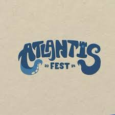

About
A short story of me
Hello! I'm Rifky Paranrengi, a passionate second-semester student at Ciputra Surabaya University, studying Informatics. I'm enthusiastic about technology and software development, with a growing focus on both frontend and backend technologies.
My journey in programming began recently, but I've already developed a strong interest in building meaningful applications that solve real-world problems. I believe in learning by doing, which is why I'm constantly working on personal projects to improve my skills.
Education

Ciputra Surabaya University
Surabaya
•
2024 - Present
~ Current
Undergraduate, Informatics
SMA Islam Athirah 1 Makassar
Makassar
•
2021 - 2024
~ 3 Years
Science Track
SMP Islam Athirah 1 Makassar
Makassar
•
2018 - 2021
~ 3 Years
General Education
SD Islam Athirah 1 Makassar
Makassar
•
2012 - 2018
~ 6 Years
Primary Education
Committee Experience

Atlantis Festival Experience
Parkit Lot, Phinisi Point
•
Makassar
Mar 2023 - Apr 2024
I'm part of the inventory committee, which is a really fun group. We make sure that everything is ready for the event, including the stage, the artists, and any emergency equipment.
NPLC 12th
Informatics Department
•
Makassar
Nov 2024 - Jan 2025
My job as Liaison Officer is to make sure the rules of the NPLC Rally Games (Category 2) posts are clear and easy to understand.
Skills
My Learning Progress
HTML
CSS
JavaScript
Java
Python
TailwindCSS
Bootstrap
Git
GitHub
VS Code
Figma
Feel free to reach out if you'd like to connect or collaborate!
Get in Touch